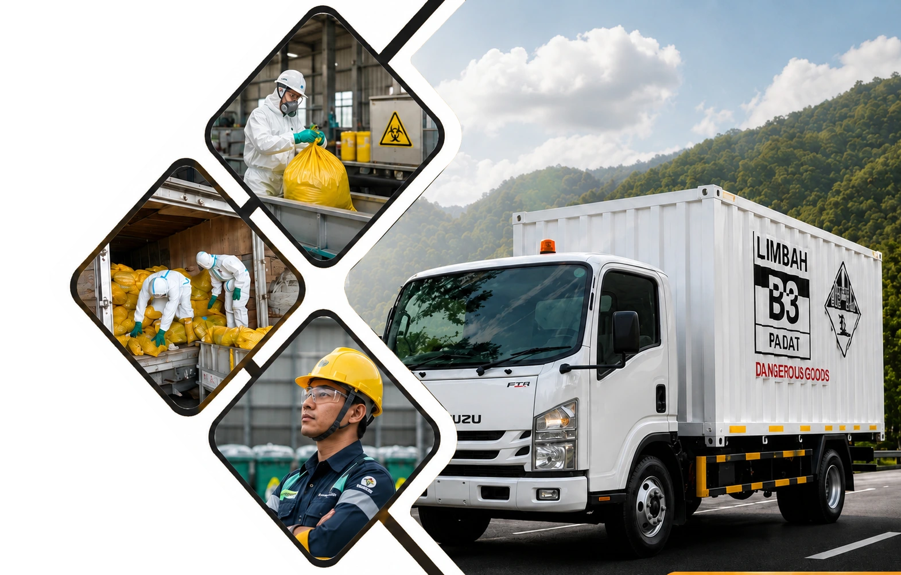

001Transporter · Manifest · Schedule
Pengangkutan Limbah B3
Layanan pengangkutan limbah B3 secara aman, terjadwal, dan terdokumentasi untuk membantu perusahaan menjaga kepatuhan operasional.
Lihat detail layananWaste Management · Environmental Services
PT. Sarana Pamunah Limbah Indonesia menghadirkan layanan pengangkutan, pengolahan, pemusnahan produk reject non B3, konsultasi lingkungan dengan pendekatan profesional dan dapat di andalkan.
Fokus pada limbah bahan berbahaya dan beracun dari aktivitas industri.
Layanan utama yang dapat disesuaikan dengan kebutuhan perusahaan.
Jenis limbah yang dapat di kelola.
Our Services

001Transporter · Manifest · Schedule
Layanan pengangkutan limbah B3 secara aman, terjadwal, dan terdokumentasi untuk membantu perusahaan menjaga kepatuhan operasional.
Lihat detail layanan 002
002
Treatment · Control · Safety
Dukungan pengolahan limbah B3 dengan teknologi terbaik, aman, dan berorientasi pada perlindungan lingkungan jangka panjang.
Lihat detail layanan 003
003
Reject Product · Brand Protection
Solusi pemusnahan produk reject non B3 untuk menjaga keamanan merek, kebersihan stok, dan tata kelola bisnis perusahaan.
Lihat detail layanan 004
004
Advisory · Compliance · Report
Pendampingan teknis dan administratif agar proses pengelolaan lingkungan lebih tertata, jelas, dan mudah dikendalikan.
Lihat detail layananWhy SPLI
Gunakan tombol kartu di samping untuk menggeser fokus ke keunggulan SPLI.
Diskusikan Kebutuhan